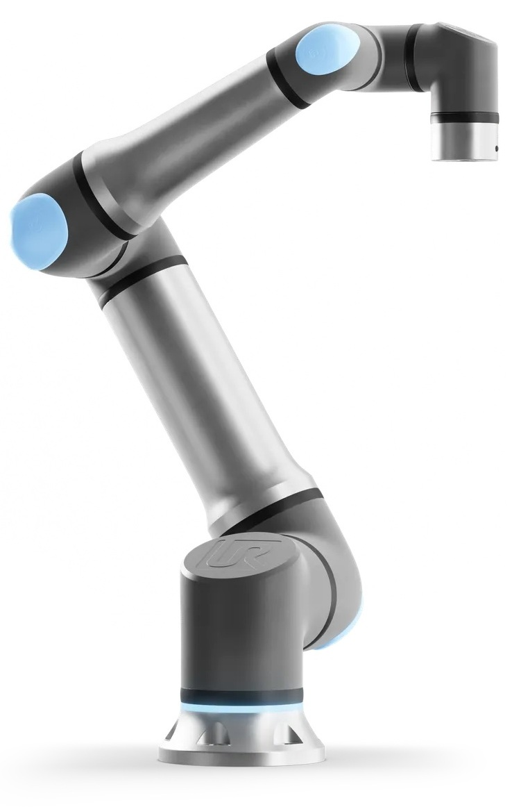

Robô UR
Os robôs UR (Universal Robots) operam por meio de três componentes principais: o manipulador robótico, o controlador e o sistema de segurança. O manipulador é o braço mecânico articulado, capaz de realizar movimentos precisos para executar tarefas como montagem e embalagem. O controlador é o cérebro do robô, interpretando as instruções e traduzindo-as em comandos para os motores do manipulador. Sensores de força e torque garantem a segurança, permitindo que o robô pare automaticamente se detectar um impacto com objetos ou operadores.

Adaptado de: Universal Robots
Adaptado de: Universal Robots